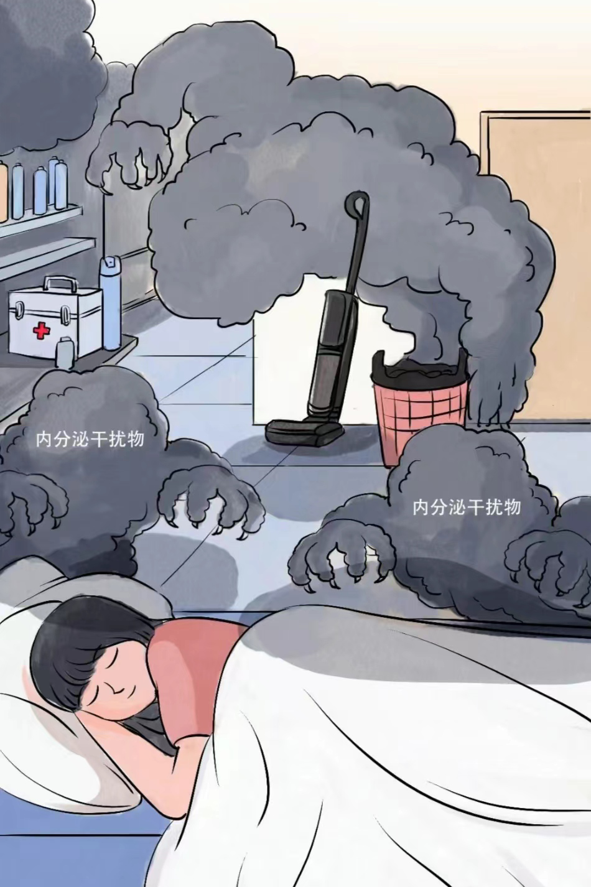
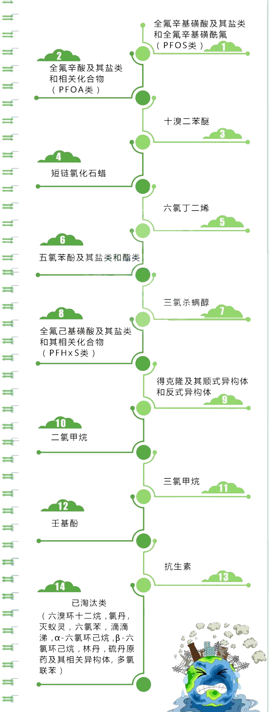

<!DOCTYPE html>
<html>
	<head>
		
		<meta charset="utf-8" />
		<title></title>
	</head>
	<body>
		
	</body>
</html>
<!DOCTYPE html>
<html lang="en">

<head>
  <meta charset="UTF-8" />
  <meta name="viewport" content="width=device-width, initial-scale=1.0" />
  <meta http-equiv="X-UA-Compatible" content="ie=edge" />
  <link rel="stylesheet" href="css/style.css">
  <link rel="stylesheet" href="css/sfq.css">
  <link rel="stylesheet" href="css/big_div.css">
  <link rel="stylesheet" href="css/media.css">
  <link rel="stylesheet" href="css/bg.css">
  <link rel="stylesheet" href="css/cban.css">
  <title>2023科普创意大赛参赛作品</title>
  <script src="js/rem.js"></script>
</head>  

<body>
	
	    
  <!-- 导航栏 -->
  <nav>
    <ul class="nav-menu">
      <li><a href="#" id="first">Emerging Contaminants</a></li>
      <li><a href="#">首页</a></li>
      <li><a href="#base">基本背景</a></li>
      <li><a href="#jiaoshe">前世今生</a></li>
      <li><a href="#plot">治理方案</a></li>
      <li><a href="index2.html">关于我们</a></li>
    </ul>
    <div class="burger">
      <div class="top-line"></div>
      <div class="middle-line"></div>
      <div class="bottom-line"></div>
    </div>
  </nav>
  </div>

  <div class="head"></div>
    
  </div>
 <!-- 观察窗口，宽高和一张图片一致s
    <div id="show" onmouseover="stopRolling()" onmouseout="startRolling()">
     <div id="dots">
      <div id="dot1" class="dot">1</div>
      <div id="dot2" class="dot">2</div>
      
     </div>
     <div id="content">
      <div id="d1"></div>
      <div id="d2"></div>
      
     </div>
    </div> -->

  <!-- 大尺寸盒子 -->
  <div class="big_div big_div_004">
    <div class="kong"></div>
    <div class="title">什么是新污染物？</div>
    <div class="img">
      
    </div>
    <div class="you"><span>《新污染物》</span>
      <p>2020年11月，《中共中央关于制定国民经济和社会发展第十四个五年规划和二〇三五年远景目标的建议》公布，其中出现了“重视新污染物治理”这一表述。</p>
      <p>新污染物是指缺乏环境监测数据或尚无环境标准，但在环境中存在，并可在环境相关浓度下对人群健康或生态安全产生毒害作用的化学物质。</p>
      <p>新污染物又被称为新型污染物或新兴污染物。新污染物的所谓“新”并不是指新的化学物质，而是指新近关注的、对生态环境或人体健康存在风险，但尚未纳入常规管理监测或者现有管理措施不足以有效防控其风险。</p>
      
    </div>
    <div class="kong"></div>
  </div>

  <!-- 基本背景 -->
  <div class="big_div " id="base">
    <span>基本背景</span>
    <table id="tfhover" class="tfhover" border="0" >
      <tr background-color="white">
        <td class="blue"><b>名 称</b></td>
        <td>新污染物(Emerging Contaminants)</td>
        <td class="blue"><b>分 类</b></td>
        <td>持久性有机污染物、内分泌干扰物、抗生素、微塑料等</td>
      </tr>
      <tr>
        <td class="blue"><b>特 点</b></td>
        <td>隐蔽性、持久性、危害性、不易治理、广泛性</td>
        <td class="blue"><b>分 布</b></td>
        <td>水体、土壤和空气中均有分布，其中水环境为主要载体</td>
      </tr>
      <tr>
        <td class="blue"><b>危 害</b></td>
        <td colspan="3">长期存在于环境，具生物蓄积性和毒性，干扰生物内分泌系统，对人类等生物身体健康和生态环境具严重危害</td>
		<td></td>
		<td></td>
      </tr>
    </table>
	<style type="text/css">
		table .blue{
			color: rgb(174, 0, 11);
		}
	</style>
	<div class="banner">
	  
	</div>
  </div>

  <div class="big_div  big_div_001 " id="jiaoshe">
    <p id="title">前世今生</p>
    <div class="shell">
      <div class="box">
        
        <span>持久性有机污染物类</span>
      </div>
      <div class="box">
        
        <span>环境内分泌干扰物类</span>
      </div>
      <div class="box">
        
        <span>抗生素类</span>
      </div>
      <div class="box">
        
        <span>微塑料类</span>
      </div>
    </div>
  </div>
  <!-- 小尺寸盒子-->
  <div class="big_div big_div_003">
    <div class="kong"></div>
    <div class="title">新污染物</div>
    <div class="img"></div>
    <span>什么是新污染物？</span>
    <p>联合国教科文组织：新污染物可以广义地理解为任何合成的或天然存在的化学物质或微生物，它们在环境中通常不被检测或管理，具有潜在的已知或可疑的生态和人体健康不利影响。</p>
    <p>从改善生态环境质量和环境风险管理的角度看：新污染物是指那些具有生物毒性、环境持久性、生物累积性等特征，进入环境后对生态环境或者人体健康存在较大风险，但尚未纳入环境管理或者现有管理措施不足的有毒有害化学物质。</p>
    <div class="kong"></div>
  </div>

  <div class="big_div big_div_003">
    <div class="kong"></div>
    <div class="title" id="zzjs">主要特点</div>
    <div class="img"></div>
    <span>环境危害性/风险隐蔽性</span>
    <p>新污染物对器官、神经、生殖、发育等方面都存在危害，其生产和使用往往与人类的生活息息相关，对生态环境和人体健康存在较大风险。</p>
    <p>多数新污染物的短期危害并不明显，一旦发现其危害性是，它们可能已经通过各种途径进入到环境中了。</p>
    <div class="img"></div>
    <span>环境持久性/来源广泛性</span>
    <p>新污染物大多具有生物累积性的特征，且在环境中难以降解，在生态系统中易于富集，可长期蓄积在环境中和生物体内，能够随着空气、水流长距离迁移或顺着食物链扩散。</p>
    <p>我国是化学物质生产使用大国，在产在用的化学物质多达数万种，且还在以每年上千种的速度增加，其生产消费都可能存在环境排放。</p>
    <div class="img"></div>
    <span>治理复杂性</span>
	<p>对于具有持久性和生物累积性的新污染物，即使是以低剂量排放到环境，也可能危害环境、生物和人体健康，对治理程度要求高。</p>
	<p>新污染物涉及行业众多，产业链长，迁移转化机理研究难度大导致治理困难，需多部门跨领域协同治理，实施全生命周期环境风险管控。</p>
    <div class="kong"></div>
    <div class="kong"></div>
    <div class="kong"></div>
  </div>

  <div class="big_div big_div_003">
    <div class="kong"></div>
    <div class="title" id="gylm">管控清单</div>
    <div class="img"></div>
    <span>重点管控新污染物清单(2023年版)</span>
    <div class="kong"></div>
  </div>

  <div class="big_div big_div_002">
    <div class="title" id="jsjs">《新污染物的前世今生》</div>
	<div class="guide">
	  
	</div>
    <div class="small-box">
      <div class="box-left">
        
      </div>
      <div class="box-right">
        <span>持久性有机污染物类</span>
        <p>全氟辛酸及其盐类和相关化合物（PFOA类）属于典型的持久性有机污染物（POPs），被广泛用于各种消费品领域，常用于纺织品防水涂层和服装、地毯的防污涂层等产品表面处理，也常用作消防泡沫的表面活性剂。我们日常厨房使用的不粘锅的生产过程中就要使用全氟辛酸作为助剂。</p>
        <p>全氟辛酸在环境中难以降解，并可以在生物体内长时间积累，其可导致神经行为缺陷、生殖发育障碍、器官损伤及内分泌失调等。</p>
      </div>
    </div>

    <div class="small-box">
      <div class="box-left">
        

      </div>
      <div class="box-right">
        <span>环境内分泌干扰物类</span>

        <p>壬基酚（NP）属于典型的环境激素（EDCs），是一类重要精细化工原料和中间体，其被用作农药乳化剂、日化洗涤剂、造纸工业用的洗涤和分散剂及润滑油添加剂等。生活中常见的来源包括吸尘器中的灰尘、化妆品和杀虫剂等。</p>
        <p>即使低剂量、长周期暴露的壬基酚也会产生内分泌干扰效应，即干扰人类或动物内分泌系统的正常工作，造成雌性不孕不育和雄性生殖系统异常等疾病。</p>
      </div>
    </div>

    <div class="small-box">
      <div class="box-left">
        

      </div>
      <div class="box-right">
        <span>抗生素类</span>

        <p>抗生素（Antibiotics）是一类具有抗菌作用的药物，也是大家都很熟悉的“消炎药”。 青霉素于1928年首次被发现，它是人类历史上发现的第一种抗生素。制药生产过程中排放的含抗生素废水、人和动物使用的未完全生效的抗生素，使得其在自然界中泛滥。</p>
        <p>抗生素会杀死部分微生物，导致微生物群落结构发生改变，还会使细菌抗药性增强，催生出具有超强耐药性的“超级细菌”，使疾病更加难以治疗，甚至干扰自然界群落的正常演替，削弱生物多样性。</p>
      </div>
    </div>

    <div class="small-box">
      <div class="box-left">
        
      </div>
      <div class="box-right">
        <span>微塑料类</span>
        <p>微塑料（Microplastics）指直径小于5mm的塑料颗粒，其来源于塑料的物理破碎，还直接来源于人们的生产和生活，例如汽车轮胎与路面摩擦过程中会产生塑料颗粒，洗衣废水也是重要来源之一。在日常使用的洗面奶中，平均每克便含有高达两万个微塑料颗粒。</p>
        <p>塑料微珠在通过排水系统进入到水体环境过程中，还能吸附多种致癌物质，又因为微塑料难以在自然界中降解，便能轻松通过食物链富集在生物体内。当微塑料进入人体后，会扰乱人体细胞的工作，造成人体免疫系统功能减弱以及肺部损伤，甚至还会影响大脑发育。</p>
      </div>
    </div>

    
    <div class="kong"></div>
  </div>


  <!-- 治理方案部份 -->
  <div class="big_div" id="plot">
    <span id="title">治理方案</span>
    <div>
		<p>
		  2022年5月4日，国务院办公厅印发<a href="https://www.gov.cn/zhengce/content/2022-05/24/content_5692059.htm">《新污染物治理行动方案》(点击打开)</a>，自2022年8月起至今，已有超过30个省（自治区、直辖市）陆续印发省级新污染物治理工作方案。2023年1月，第一个地市级（江苏省淮安市）新污染物治理工作实施方案公布，目前地市级方案正在陆续发布，2023年将是地市级方案集中发布年。这标志着《新污染物治理行动方案》从国家到省再到地级市正在得到逐级推进和落实。
		</p>
		<p>
		  2023年版的<a href="http://big5.mee.gov.cn/gate/big5/www.mee.gov.cn/gzk/gz/202212/P020230111617948128254.pdf">《重点管控新污染物清单》(点击打开)</a>明确规定了14种须严格禁止、限制、限排的新污染物。新污染物治理的总体思路可概括为：“筛、评、控”和“禁、减、治”，治理新污染物公众也可以从小事做起，如注意节约用水、减少塑料袋的使用、合理规范抗生素的使用等，让我们共建天蓝、水清、地净的美丽家园。
		  <!-- 上海市https://www.shanghai.gov.cn/nw12344/20230214/fd5df4e3db224260917365e5b9a5a733.html
		  江苏省http://www.jiangsu.gov.cn/art/2022/12/13/art_84418_10705549.html
		  浙江省https://www.zj.gov.cn/art/2023/1/18/art_1229017139_2455261.html
		  山东省http://www.shandong.gov.cn/art/2023/2/7/art_267492_43642.html
		  安徽省https://sthjt.ah.gov.cn/public/21691/121326911.html
		  江西省http://www.jiangxi.gov.cn/art/2023/1/5/art_4969_4317007.html
		  福建省http://www.fujian.gov.cn/zwgk/zxwj/szfbgtwj/202301/t20230106_6088041.htm
		  广东省http://www.gd.gov.cn/zwgk/wjk/qbwj/yfb/content/post_4133140.html
		  广西壮族自治区http://www.gxzf.gov.cn/zfwj/zzqrmzfbgtwj_34828/2022ngzbwj/t13319052.shtml
		  海南省https://www.hainan.gov.cn/hainan/szfbgtwj/202211/8d243feaa9c0412896b099dd2b6fe0a8.shtml
		  北京市https://www.beijing.gov.cn/zhengce/zfwj/202305/t20230516_3104666.html
		  天津市https://www.tj.gov.cn/zwgk/szfwj/tjsrmzfbgt/202301/t20230104_6068883.html
		  河北省http://www.hebei.gov.cn/shoujiapp/15087087/15087139/15434586/index.html
		  山西省https://www.shanxi.gov.cn/zfxxgk/zfxxgkzl/fdzdgknr/lzyj/szfbgtwj/202212/t20221216_7620288.shtml
		  内蒙古自治区https://www.nmg.gov.cn/zwgk/zfxxgk/zfxxgkml/zzqzfjbgtwj/202303/t20230301_2264494.html
		  河南省https://www.henan.gov.cn/2023/01-31/2681679.html
		  湖北省http://www.hubei.gov.cn/zfwj/ezbh/202304/t20230411_4619698.shtml
		  湖南省http://sthjt.hunan.gov.cn/sthjt/xxgk/zcfg/gfxwj/202301/t20230112_29181092.html
		  重庆市https://sthjj.cq.gov.cn/hdjl_249/myzj/202212/t20221201_11349230_wap.html
		  四川省https://www.sc.gov.cn/10462/zfwjts/2022/12/27/9f4643cc25cc4f06a54d0845153445f3.shtml
		  贵州省https://sthj.guizhou.gov.cn/zwgk/zcwj/tjwj/202301/t20230110_77893241.html
		  云南省https://www.yn.gov.cn/zwgk/zcwj/zxwj/202212/t20221212_251664.html
		  西藏自治区http://www.xizang.gov.cn/zwgk/xxfb/zbwj/202301/t20230129_339016.html
		  辽宁省https://www.ln.gov.cn/web/hdjl/yjzj/zfwj/2023032815043478280/
		  吉林省http://xxgk.jl.gov.cn/szf/gkml/202301/t20230109_8657217.html
		  黑龙江省https://hlj.gov.cn/hlj/c108381/202212/c00_31454471.shtml
		  陕西省http://www.shaanxi.gov.cn/zfxxgk/zcwjk/szf_14998/qtwj/202211/t20221116_2264918.html
		  甘肃省http://www.gansu.gov.cn/gsszf/c100055/202301/43937075.shtml?fLEvYk0FzGXg=1688181245821
		  青海省http://www.qinghai.gov.cn/xxgk/xxgk/fd/zfwj/202301/t20230116_191617.html
		  宁夏回族自治区https://www.nx.gov.cn/zwgk/qzfwj/202301/t20230104_3902772.html
		  新疆维吾尔自治区http://www.xinjiang.gov.cn/xinjiang/c112545/202302/b6da4becefc143c796bfa73979df50d9.shtml -->
		</p>
		<!--  -->
		
		<map name="#province">
		    <area target="_blank" alt="Shanghai" title="Shanghai" href="https://www.shanghai.gov.cn/nw12344/20230214/fd5df4e3db224260917365e5b9a5a733.html" coords="772,494,792,512" shape="rect">
		    <area target="_blank" alt="Jiangsu" title="Jiangsu" href="http://www.jiangsu.gov.cn/art/2022/12/13/art_84418_10705549.html" coords="731,435,772,498" shape="rect">
		    <area target="_blank" alt="Zhejiang" title="Zhejiang" href="https://www.zj.gov.cn/art/2023/1/18/art_1229017139_2455261.html" coords="759,539,27" shape="circle">
		    <area target="_blank" alt="Shandong" title="Shandong" href="http://www.shandong.gov.cn/art/2023/2/7/art_267492_43642.html" coords="723,399,36" shape="circle">
		    <area target="_blank" alt="Anhui" title="Anhui" href="https://sthjt.ah.gov.cn/public/21691/121326911.html" coords="685,459,728,522" shape="rect">
		    <area target="_blank" alt="Jiangxi" title="Jiangxi" href="http://www.jiangxi.gov.cn/art/2023/1/5/art_4969_4317007.html" coords="663,534,701,589" shape="rect">
		    <area target="_blank" alt="Fujian" title="Fujian" href="http://www.fujian.gov.cn/zwgk/zxwj/szfbgtwj/202301/t20230106_6088041.htm" coords="725,598,24" shape="circle">
		    <area target="_blank" alt="Guangdong" title="Guangdong" href="http://www.gd.gov.cn/zwgk/wjk/qbwj/yfb/content/post_4133140.html" coords="624,624,689,660" shape="rect">
		    <area target="_blank" alt="Guangxi" title="Guangxi" href="http://www.gxzf.gov.cn/zfwj/zzqrmzfbgtwj_34828/2022ngzbwj/t13319052.shtml" coords="577,638,35" shape="circle">
		    <area target="_blank" alt="Hainan" title="Hainan" href="https://www.hainan.gov.cn/hainan/szfbgtwj/202211/8d243feaa9c0412896b099dd2b6fe0a8.shtml" coords="589,718,15" shape="circle">
		    <area target="_blank" alt="Beijing" title="Beijing" href="https://www.beijing.gov.cn/zhengce/zfwj/202305/t20230516_3104666.html" coords="699,322,12" shape="circle">
		    <area target="_blank" alt="Tianjin" title="Tianjin" href="https://www.tj.gov.cn/zwgk/szfwj/tjsrmzfbgt/202301/t20230104_6068883.html" coords="716,341,12" shape="circle">
		    <area target="_blank" alt="Hebei" title="Hebei" href="http://www.hebei.gov.cn/shoujiapp/15087087/15087139/15434586/index.html" coords="659,333,691,384" shape="rect">
		    <area target="_blank" alt="Shanxi" title="Shanxi" href="https://www.shanxi.gov.cn/zfxxgk/zfxxgkzl/fdzdgknr/lzyj/szfbgtwj/202212/t20221216_7620288.shtml" coords="611,333,648,414" shape="rect">
		    <area target="_blank" alt="Neimenggu" title="Neimenggu" href="https://www.nmg.gov.cn/zwgk/zfxxgk/zfxxgkml/zzqzfjbgtwj/202303/t20230301_2264494.html" coords="444,251,661,328" shape="rect">
		    <area target="_blank" alt="Henan" title="Henan" href="https://www.henan.gov.cn/2023/01-31/2681679.html" coords="649,449,33" shape="circle">
		    <area target="_blank" alt="Hubei" title="Hubei" href="http://www.hubei.gov.cn/zfwj/ezbh/202304/t20230411_4619698.shtml" coords="597,484,672,530" shape="rect">
		    <area target="_blank" alt="Hunan" title="Hunan" href="http://sthjt.hunan.gov.cn/sthjt/xxgk/zcfg/gfxwj/202301/t20230112_29181092.html" coords="590,537,647,601" shape="rect">
		    <area target="_blank" alt="Chongqing" title="Chongqing" href="https://sthjj.cq.gov.cn/hdjl_249/myzj/202212/t20221201_11349230_wap.html" coords="555,524,26" shape="circle">
		    <area target="_blank" alt="Sichuan" title="Sichuan" href="https://www.sc.gov.cn/10462/zfwjts/2022/12/27/9f4643cc25cc4f06a54d0845153445f3.shtml" coords="468,512,48" shape="circle">
		    <area target="_blank" alt="Guizhou" title="Guizhou" href="https://sthj.guizhou.gov.cn/zwgk/zcwj/tjwj/202301/t20230110_77893241.html" coords="546,580,29" shape="circle">
		    <area target="_blank" alt="Yunnan" title="Yunnan" href="https://www.yn.gov.cn/zwgk/zcwj/zxwj/202212/t20221212_251664.html" coords="452,621,44" shape="circle">
		    <area target="_blank" alt="Xizang" title="Xizang" href="http://www.xizang.gov.cn/zwgk/xxfb/zbwj/202301/t20230129_339016.html" coords="108,450,335,555" shape="rect">
		    <area target="_blank" alt="Liaoning" title="Liaoning" href="https://www.ln.gov.cn/web/hdjl/yjzj/zfwj/2023032815043478280/" coords="798,294,42" shape="circle">
		    <area target="_blank" alt="Jilin" title="Jilin" href="http://xxgk.jl.gov.cn/szf/gkml/202301/t20230109_8657217.html" coords="863,250,34" shape="circle">
		    <area target="_blank" alt="Heilongjiang" title="Heilongjiang" href="https://hlj.gov.cn/hlj/c108381/202212/c00_31454471.shtml" coords="885,159,57" shape="circle">
		    <area target="_blank" alt="Shaanxi" title="Shaanxi" href="http://www.shaanxi.gov.cn/zfxxgk/zcwjk/szf_14998/qtwj/202211/t20221116_2264918.html" coords="557,377,593,472" shape="rect">
		    <area target="_blank" alt="Gansu" title="Gansu" href="http://www.gansu.gov.cn/gsszf/c100055/202301/43937075.shtml?fLEvYk0FzGXg=1688181245821" coords="373,315,44" shape="circle">
		    <area target="_blank" alt="Qinghai" title="Qinghai" href="http://www.qinghai.gov.cn/xxgk/xxgk/fd/zfwj/202301/t20230116_191617.html" coords="371,411,51" shape="circle">
		    <area target="_blank" alt="Ningxia" title="Ningxia" href="https://www.nx.gov.cn/zwgk/qzfwj/202301/t20230104_3902772.html" coords="516,360,541,410" shape="rect">
		    <area target="_blank" alt="Xinjiang" title="Xinjiang" href="http://www.xinjiang.gov.cn/xinjiang/c112545/202302/b6da4becefc143c796bfa73979df50d9.shtml" coords="200,287,120" shape="circle">
		</map>
		<p> </p>
		<h4>·新污染物治理科普时刻·</h4>
		
		
	</div>
		<div class="video">
			<video src="imgg/ec_video.mp4" controls autoplay></video>
		</div>
		
  </div>

  <!-- 侧边按钮部份 -->
  <div class="menu-box">
    <!-- 图标按钮 -->
    <div class="menu-button">
      <div class="line-box">
        <div class="line"></div>
        <div class="line"></div>
        <div class="line"></div>
      </div>
    </div>
    <!-- 菜单列表 -->
    <ul class="menu-list">
      <li><i class="fa fa-clone"></i><span><a href="#base">基本背景</a></span></li>
      <li><i class="fa fa-share-square-o"></i><span><a href="#jiaoshe">前世今生</a></span></li>
      <li><i class="fa fa-trash-o"></i><span><a href="#plot">治理方案</a></span></li>
      <li><i class="fa fa-sliders"></i><span><a href="#">回到顶部</a></span></li>
    </ul>
  </div>

  <!-- footer部份 -->
  <footer>
    <p class="footer">制作团队：中国人民大学低碳水环境技术研究中心</p>
  </footer>

  <!-- 添加js文件 -->
  <script src="js/nav.js" type="text/javascript"></script>
  <script src="js/bg.js" type="text/javascript"></script>
  <script src="js/cban.js" type="text/javascript"></script>
  <script>
    var ul = document.querySelector('.nav-menu')
    var a = ul.querySelectorAll('li a')
    console.dir(a)
    window.addEventListener('resize', function (e) {
      if (window.innerWidth < 575) {
        for (let i = 0; i < a.length; i++) {
          a[1].innerText = '新污染物'
          a[2].innerText = '主要特点'
          a[3].innerText = '管控清单'
          a[4].innerText = '前世今生'
          a[5].innerText = '关于我们'
          a[2].href = '#zzjs'
          a[3].href = '#gylm'
          a[4].href = '#jsjs'
        }
      } else {
        for (let i = 0; i < a.length; i++) {
          a[1].innerText = '首页'
          a[2].innerText = '基本背景'
          a[3].innerText = '前世今生'
          a[4].innerText = '治理方案'
          a[2].href = '#base'
          a[3].href = '#jiaoshe'
          a[4].href = '#plot'
        }
      }
    })
  </script>
</body>

</html>